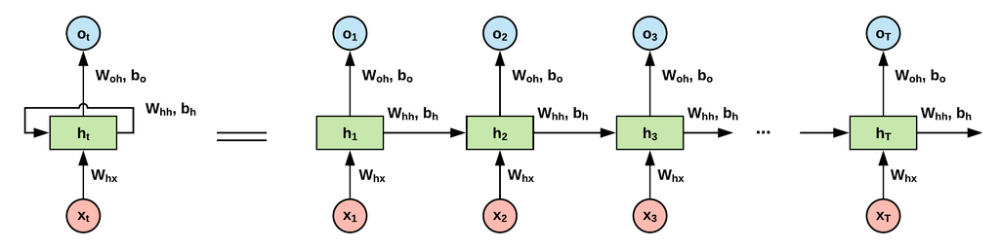

순환 신경망(RNN)
개념과 필요성
순환 신경망(Recurrent Neural Network, RNN)
: 순서가 중요한 순차적 데이터(음성, 텍스트, 시계열)를 처리하기 위해 고안된 인공신경망 모델
구분점
: 기존 신경망은 입력과 출력이 서로 독립적이라고 가정하지만, RNN은 '순환 구조(recurrent loop)'를 통해 이전 정보를 기억하고 활용
장점
: 순환 구조는 네트워크가 과거의 데이터를 현재의 예측에 반영할 수 있도록 하여, 문맥을 이해하고 시간적 종속성을 파악하는 데 필수적
예시
문장에서 다음 단어를 예측하기 위해서는 이전 단어들의 흐름과 의미를 고려해야 하는데, RNN은 이러한 시퀀스 데이터의 특성을 효과적으로 모델링할 수 있습니다.
기본 구조

RNN의 특성:
메모리
: 이전 입력들을 "기억"하고 현재 처리에 활용
문맥 이해
: 데이터의 "흐름"과 "시퀀스" 특성을 모델링
시간적 종속성
: 과거의 입력이 미래의 출력에 영향을 미치는 관계 표현
이전
8 / 10
다음